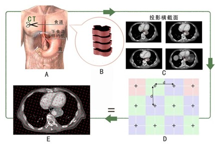
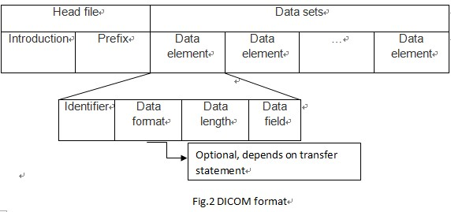
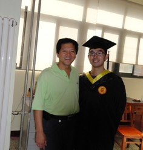

Introduction: During 01/2011 to 08/2011, I was in Professor Yuan Ming Feng’s Lab in Tianjin University, and my study focused on Biomedical Stereology on the exploration of tumor CT image geometry parameters. The main purpose of the study was to estimate the tumor volume and the tumor regression rate of 7 patients with esophageal carcinoma on serial CT images before and after the treatment by point counting method which belongs to the stereology (Fig.1). There were three steps in this study: firstly, we had to optimize the stereology in the study of esophageal carcinoma; secondly, we measured and calculated the tumor volume of 7 patients by two methods (stereology and planimetry) which aimed to exam the reliability and accuracy of stereology from the intra- and interobserver experiments compared to planimetry which is generally so-called “the gold standard”; thirdly, we got all the data of the tumor volume by optimized stereology and analyzed them by statistical methods to study the tumor regression rate. The study made use of Analyze software for stereological analysis and SPSS software for statistical analysis. Our results were: firstly, the stereology was optimized when the section density was 1/4 and the point spacing was 10mm in the CT images of all the esophageal carcinoma patients (CE=4.6972±0.6964, time=88±22s); secondly, stereology iss accurate and reliable within the requirements of the study compared to the planimetry method; thirdly, the average volume of the tumor decreased after the treatment (the regression rate was 21.39% per month). The study came to the conclusion that stereology is helpful for the diagnosis and treatment of esophageal carcinoma by CT scanning due to its high efficiency and accuracy proved in the study. It may be also helpful to provide more valuable information for making the personalized cancer treatment plan in the future. At the end of the experiment, we designed the basic platform for showing DICOM images by Matlab software, which proved its efficiency in the experiment.
Fig.1 Buonaventura Cavalieri principle in Esophageal cancer CT diagnose.
Matlab platform for showing DICOM images:
DICOM format introduction:
DICOM (Digital Imaging and Communications in Medicine) is a standard for handling, storing, printing, and transmitting information in medical imaging. It includes a file format definition and a network communications protocol. The communication protocol is an application protocol that uses TCP/IP to communicate between systems. DICOM files can be exchanged between two entities that are capable of receiving image and patient data in DICOM format (Fig.2).
Matlab platform for showing DICOM images
The platform for showing DICOM images is based on matlab and its GUI module, which makes use of the DICOM process function of matlab to realize the collection and show of DICOM images and to provide the technical basis for future DICOM images process development. Fig.3 shows the basic structure of the platform.

- it can efficiently import one or more DICOM images after CT diagnose
- it can show the basic information of the patient and the image;
- it can continuously display the DICOM images by different ways;
- it can realize the zoom, turn and displacement of the single image
- it can realize the contrast adjust of DICOM images and introduce the image process toolbox of matlab
- Humane treatment:
-
> interface shut down reminder;
-
> warning of repeatly choose same patients;
-
> view image overflow reminder;
-
>fail to call reminder;
Fig.3 Matlab platform for showing DICOM images
The photo with professor Feng
Professor Feng is an excellent professor and my second academic tutor for me at the beginning of my future lifetime. The most thing I learned from him is how to be a man, how to be an honest man, who is beneficial to the society and honest to the academy. No matter what I have finished, I always put Integrity as my first motto. He currently works as the dean of biomedical engineering department in Tianjin University.